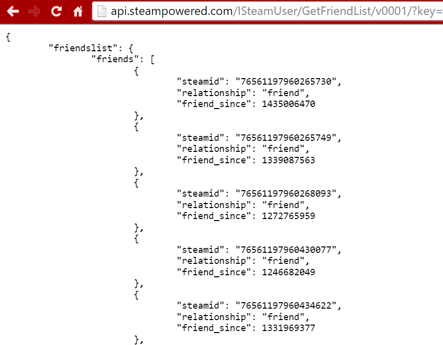

The GetFriendList call gives us the friend list of any steam user. The user has to have a public visiblity, but anyone who does you can see all of their friends!!
This is very useful if you want to set up something that finds who has been a players longest friend, or how many friends they have. It can also be combined with the get player stats(which isnt covered in this guide) to see if they have skilled friends or casual friends.
So lets begin how to use this call!
http://http://api.steampowered.com/ISteamUserStats/GetPlayerAchievements/v0001/?key=XXXXXXXXXXXXXXXXXXXXXXXXXXXXXXXX&steamid=76561197972495328&relationship=friend&format=JSON
The key has to be your own api key(or someone elses, but i cant endorse stealing) This will give you an output looking something like this:
The data listed has Three outputs:
This can be a fun call to work with since it can find who is friends with who and if you set it up right you can find data on each of a players friends and use that to see how they compare with their friends.